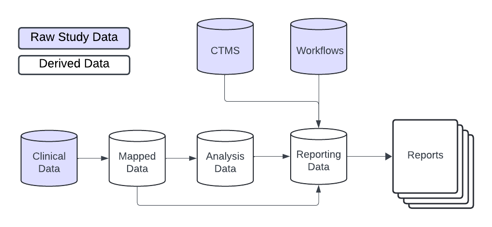
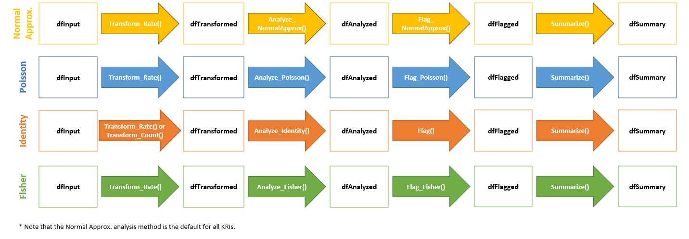

Introduction
The {gsm} suite of packages provides a standardized data
pipeline for conducting study-level Risk Based Quality Management (RBQM)
for clinical trials. There are four main types of data used in the
{gsm} suite of packages:
- Raw Data - Clinical and operational data from study databases
- Mapped Data - Data that has been transformed and standardized for analysis
- Analysis Data - Data that has been analyzed to calculate Key Risk Indicators (KRIs)
- Reporting Data - Data that has been summarized and formatted for reporting
This vignette provides a high-level overview of how each type of data is used, and includes detailed data specifications as appendices.
Data Model Overview
In general, the {gsm} suite of packages is designed to
be flexible and customizable, allowing users to build custom data
pipelines that support many types of raw study data. As shown below, raw
clinical data is transformed into mapped data, which is then analyzed to
calculate desired metrics. The analysis data is then combined and
formatted for reporting with additional data, including CTMS data
(mapped via {gsm.mapping}) and metric workflow metadata
(from the {gsm.kri} metric workflow YAML files), which
provides relevant metadata for reports.

Raw and Mapped Data
The {gsm} suite of packages is designed to work with a
wide variety of clinical data sources. The raw data used in the analysis
pipeline is typically sourced from clinical trial databases and is
transformed into mapped data using simple transformations. Mapped data
is then used as input for the analysis pipeline.
There is not a single data standard for raw or mapped data in
{gsm.mapping}. The only requirement is that the mapped data
is compatible with the analytics pipeline. Data Mapping transformations
can be done using multiple methods including custom R scripts (e.g.,
with dplyr), SQL queries, or using gsm.mapping
workflows (e.g. the
system.file("workflow/1_mappings/AE.yaml", package = "gsm.mapping")
file). Examples of these methods can be found in the Adverse
Event Workflow Cookbook.
Analysis Data
In {gsm.kri} analysis data is used to capture key
metrics associated with the conduct of a clinical trial. A set of
standard Key Risk Indicator (KRI) metrics is included in
{gsm.kri} along with automated workflows that allow them to
be run for all sites or countries in a study. Examples of KRIs include
the rate of adverse events or amount of missing data at a site or across
sites. Defining and deploying KRIs during study conduct allows study
teams to continually monitor risks to the integrity of the trial and
take corrective actions accordingly.

The image above provides an overview of the default KRI analysis pipeline. The pipeline is a standardized five-step process for assessing data issues by going from participant-level input data to a standardized site-level summary of model results. The functions used in each step of the data pipeline along with the input and output datasets are described in more detail below.
-
dfInput: Input data; Cross-domain participant-level input data with all needed data for KRI derivation. Created by theInput_Rate()function usingmappeddata as input. -
dfTransformed: Transformed data; Site-level transformed data including KRI calculation. Created byTransform_*()functions usingdfInputas input. -
dfAnalyzed: Analyzed data; Site-level analysis results data. Created byAnalyze_*()functions usingdfTransformedas input. -
dfFlagged: Flagged data; Site-level analysis results with flags added to indicate potential statistical outliers. Created by passing numeric thresholds to theFlag()function (or its aliasesFlag_NormalApprox()andFlag_Poisson()) usingdfAnalyzedas input. -
dfSummary: Summary data; Standardized subset of the flagged data. This summary data has the same structure for all assessments and always includes both KRI and Flag values so that a user can easily look at trends for any given site across multiple assessments. Created using theSummarize()function usingdfFlaggedas input.
The data requirements for each component of the analysis pipeline are rigid; See Appendix 1 for full specifications.
Analysis Workflows
Since there are rigid data requirements for each component of the analysis data model, the analysis workflow is largely standardized. There are two main approaches to running the analysis workflow:
-
Scripted Analysis: Run each step of the analysis
pipeline individually using the functions provided in the
{gsm}suite of packages. This approach is useful for understanding the data requirements and for debugging. See the Adverse Event KRI Cookbook for an example of this approach. - Workflow Analysis: Run the analysis pipeline using a YAML workflow file. This approach is useful for running the same analysis on multiple studies or for automating the analysis process. See the Adverse Event Workflow Cookbook for an example of this approach.
Note that each step in these workflows can be customized based on the
requirements for a specific KRI. The graphic below shows four such
workflows. Note that Flag() is the flagging function for
every model (Flag_NormalApprox() and
Flag_Poisson() are aliases of Flag(); there is
no Flag_Fisher()). Because Analyze_Fisher()
returns two-sided p-values as Score, Fisher workflows need
p-value thresholds,
e.g. Flag(dfAnalyzed, vThreshold = c(0.01, 0.05), vFlag = c(2, 1, 0), vFlagOrder = c(2, 1, 0));
the p-value carries no direction, so compare Prop with
Prop_Other to see whether a group is high or low. Also note
that Summarize() requires GroupID,
GroupLevel, Flag and Score
columns; the output of Analyze_Fisher() (and of
Transform_Count()) has no GroupLevel column,
so one must be added (e.g. with
dplyr::mutate(GroupLevel = "Site")) before calling
Summarize().

More details about analysis data pipelines can be found in the Data Analysis article.
Reporting Data
A rigid Reporting Data framework is provided in
{gsm.reporting} to allow for standardized reporting,
visualization and meta-analysis that compare risk profiles across
timepoints, and even across multiple studies. The Reporting Data sets
used in {gsm.reporting} and {gsm.kri} are:
-
Reporting_Results: Summary data; Standardized subset of the flagged data. This summary data has the same structure for all assessments and always includes both KRI and Flag values so that a user can easily look at trends for any given site across multiple assessments. Created using theSummarize()function in the analytics pipeline, followed by theBindResults()function to add columns necessary for reporting and stack metrics into a single data.frame, and theCalculateChange()function to add changes from the previous snapshot. -
Reporting_Bounds: Bounded data; A data.frame containing predicted boundary values with upper and lower bounds across the range of observed values. Created with theMakeBounds()function. -
Reporting_Groups: Grouped data; Long data.frame of summarized group CTMS data with site, study, and country level counts and metrics. Constructed by binding the mapped group data (Mapped_STUDY,Mapped_SITE,Mapped_COUNTRY) created withgsm.mapping::MakeLongMeta(). -
Reporting_Metrics: Metric metadata; Metric-specific metadata for use in charts and reporting. Created by passing a list of metric workflows (lWorkflows) to theMakeMetric()function.
Similar to Analysis Workflows, reporting data pipelines can be run as
R scripts or as YAML workflows. The Reporting
Workflow Cookbook shows how to populate the Reporting Data tables
using output from the Analysis Workflows and other study data sources.
The Step-by-Step
Reporting Workflow article in {gsm.reporting} provides
more details on the Reporting Data model.
Analytics data model
The KRI analytics pipeline is a standardized process for
Analyzing data issues by going from participant-level
input data to a standardized site-level
summary of model results. The data sets used in each step
of the data pipeline are described in detail below. When using a metric
workflow YAML to create these tables, all data tables are contained in a
list, which we call lAnalysis. This list is then fed into
the reporting data pipeline.
Analysis Data Tables
Analysis_Input
- Function(s) used to create table:
- Inputs:
-
dfSubjects(e.g.Mapped_SUBJ) -
dfNumerator(e.g.Mapped_AE) -
dfDenominator(e.g.Mapped_SUBJ)
-
- Usage: The base data.frame for all Analysis workflows. Feeds into
the
Transform_*()functions. One row per subject; subjects without numerator/denominator records get a value of 0, and rows with a missingGroupIDare removed. - Structure:
| Table | Column Name | Description | Type | Optional |
|---|---|---|---|---|
| Analysis_Input | SubjectID | The subject ID | Character | |
| Analysis_Input | GroupID | The group ID for the metric | Character | |
| Analysis_Input | GroupLevel | The group type for the metric (e.g. “Site”) | Character | |
| Analysis_Input | Numerator | The calculated numerator value | Numeric | |
| Analysis_Input | Denominator | The calculated denominator value | Numeric | |
| Analysis_Input | Metric | The calculated subject-level rate/metric value
(Numerator / Denominator) |
Numeric |
Analysis_Transformed
- Function(s) used to create table:
- Inputs:
Analysis_Input - Usage: Convert from input data format to needed format to derive KRI
for an Assessment via the
Analyze_*()functions. - Structure (
Transform_Rate(); groups with aDenominatorof 0 are removed):
| Table | Column Name | Description | Type | Optional |
|---|---|---|---|---|
| Analysis_Transformed | GroupID | The group ID for the metric | Character | |
| Analysis_Transformed | GroupLevel | The group type for the metric (e.g. “Site”) | Character | |
| Analysis_Transformed | Numerator | The calculated numerator value | Numeric | |
| Analysis_Transformed | Denominator | The calculated denominator value | Numeric | |
| Analysis_Transformed | Metric | The calculated rate/metric value
(Numerator / Denominator) |
Numeric |
- Structure (
Transform_Count()):
| Table | Column Name | Description | Type | Optional |
|---|---|---|---|---|
| Analysis_Transformed | GroupID | The group ID for the metric | Character | |
| Analysis_Transformed | TotalCount | The sum of strCountCol for the group |
Numeric | |
| Analysis_Transformed | Metric | The metric value (equal to TotalCount) |
Numeric |
Analysis_Analyzed
- Function(s) used to create table:
- Inputs:
Analysis_Transformed - Usage: Prepare the data for
Flag()by performing the specified test on the metric provided. - Structure (columns marked
*are only returned by someAnalyze_*()functions;Analyze_Identity()returns the columns of its input plusScore, andAnalyze_Fisher()returns noGroupLevelcolumn):
| Table | Column Name | Description | Type | Optional |
|---|---|---|---|---|
| Analysis_Analyzed | GroupID | The group ID for the metric | Character | |
| Analysis_Analyzed | GroupLevel | The group type for the metric (e.g. “Site”) | Character | |
| Analysis_Analyzed | Numerator | The calculated numerator value | Numeric | |
| Analysis_Analyzed | Denominator | The calculated denominator value | Numeric | |
| Analysis_Analyzed | Metric | The calculated rate/metric value | Numeric | |
| Analysis_Analyzed | Score | The Statistical Score (e.g. adjusted z-score, deviance residual, p-value or metric value) | Numeric | |
| Analysis_Analyzed | OverallMetric | The overall rate/proportion across all groups
(Analyze_NormalApprox()) |
Numeric | * |
| Analysis_Analyzed | Factor | The over-dispersion factor
(Analyze_NormalApprox()) |
Numeric | * |
| Analysis_Analyzed | PredictedCount | The expected count from the Poisson model
(Analyze_Poisson()) |
Numeric | * |
| Analysis_Analyzed | Numerator_Other, Denominator_Other, Prop, Prop_Other, Estimate | Values for all other groups, group proportions and odds ratio
estimate (Analyze_Fisher()) |
Numeric | * |
Analysis_Flagged
- Function(s) used to create table:
- Inputs:
Analysis_Analyzed - Usage: Flag a group-level metric to be summarized via
gsm.core::Summarize()and used for reporting. - Structure:
| Table | Column Name | Description | Type | Optional |
|---|---|---|---|---|
| Analysis_Flagged | GroupID | The group ID for the metric | Character | |
| Analysis_Flagged | GroupLevel | The group type for the metric (e.g. “Site”) | Character | |
| Analysis_Flagged | Numerator | The calculated numerator value | Numeric | |
| Analysis_Flagged | Denominator | The calculated denominator value | Numeric | |
| Analysis_Flagged | Metric | The calculated rate/metric value | Numeric | |
| Analysis_Flagged | Score | The Statistical Score | Numeric | |
| Analysis_Flagged | Flag | The ordinal Flag to be applied | Numeric | |
| Analysis_Flagged | OverallMetric | The overall rate/proportion across all groups
(Analyze_NormalApprox()) |
Numeric | * |
| Analysis_Flagged | Factor | The over-dispersion factor
(Analyze_NormalApprox()) |
Numeric | * |
| Analysis_Flagged | PredictedCount | The expected count from the Poisson model
(Analyze_Poisson()) |
Numeric | * |
| Analysis_Flagged | Numerator_Other, Denominator_Other, Prop, Prop_Other, Estimate | Values for all other groups, group proportions and odds ratio
estimate (Analyze_Fisher()) |
Numeric | * |
| Analysis_Flagged | Weight, WeightMax | Risk score weight for the flag and maximum weight (only when
vRiskScoreWeight is provided) |
Numeric | * |
Analysis_Summary
- Function(s) used to create table:
- Inputs:
Analysis_Flagged - Usage: Summarize KRI at the group level for reporting. Rows are
sorted by
Flagin the order 2, -2, 1, -1, 0 and then by descending absoluteMetric. - Structure:
| Table | Column Name | Description | Type | Optional |
|---|---|---|---|---|
| Analysis_Summary | GroupID | The group ID for the metric | Character | |
| Analysis_Summary | GroupLevel | The group type for the metric (e.g. “Site”) | Character | |
| Analysis_Summary | Numerator | The calculated numerator value | Numeric | |
| Analysis_Summary | Denominator | The calculated denominator value | Numeric | |
| Analysis_Summary | Metric | The calculated rate/metric value | Numeric | |
| Analysis_Summary | Score | The Statistical Score | Numeric | |
| Analysis_Summary | Flag | The ordinal Flag to be applied | Numeric |
Overview of Reporting data model
Reporting Data Tables
Reporting_Results
- Function(s) used to create table:
gsm.reporting::BindResults()gsm.reporting::CalculateChange()gsm.kri::FilterByLatestSnapshotDate()
- Inputs:
lAnalyzed(named list oflAnalysisoutputs),strStudyID,dSnapshotDate,Reporting_Results_Longitudinal(results from previous snapshots) - Workflow used to create table:
3_reporting/Results.yamlin{gsm.reporting} - Usage: Summarize KRI at the group level for reporting.
- Structure:
| Table | Column Name | Description | Type | Optional | |
|---|---|---|---|---|---|
| Reporting_Results | GroupID | The group ID for the metric | Character | ||
| Reporting_Results | GroupLevel | The group type for the metric (e.g. “Site”) | Character | ||
| Reporting_Results | Numerator | The calculated numerator value | Numeric | ||
| Reporting_Results | Denominator | The calculated denominator value | Numeric | ||
| Reporting_Results | Metric | The calculated rate/metric value | Numeric | ||
| Reporting_Results | Score | The calculated metric score | Numeric | ||
| Reporting_Results | Flag | The calculated flag | Numeric | ||
| Reporting_Results | MetricID | The Metric ID | Character | ||
| Reporting_Results | StudyID | The Study ID (only added when strStudyID is
provided) |
Character | * | |
| Reporting_Results | SnapshotDate | The Date of the snapshot | Date | ||
| Reporting_Results | SnapshotDate_Previous | The Date of the previous snapshot (added by
CalculateChange()) |
Date | * | |
| Reporting_Results |
<Param>_Previous,
<Param>_Change,
<Param>_PercentChange |
Previous value, change and percent change from the previous snapshot
for Numerator, Denominator,
Metric, Score and Flag (added by
CalculateChange()) |
Numeric | * |
Reporting_Bounds
- Function(s) used to create table:
gsm.reporting::MakeBounds()-
gsm.core::Analyze_NormalApprox_PredictBounds()orgsm.core::Analyze_Poisson_PredictBounds()(called withingsm.reporting::MakeBounds(), based on the metric’sAnalysisType; no bounds are created foridentitymetrics)
- Inputs:
Reporting_Results,Reporting_Metrics - Workflow used to create table:
3_reporting/Bounds.yamlin{gsm.reporting} - Usage: Calculates predicted percentages/rates and upper- and lower-bounds across the full range of sample sizes/total exposure values for reporting.
- Structure:
| Table | Column Name | Description | Type | Optional | |
|---|---|---|---|---|---|
| Reporting_Bounds | Threshold | The number of standard deviations that the upper and lower bounds are based on (0 gives the expected value) | Numeric | ||
| Reporting_Bounds | Denominator | The calculated denominator value | Numeric | ||
| Reporting_Bounds | LogDenominator | The calculated log denominator value | Numeric | ||
| Reporting_Bounds | Numerator | The calculated numerator value | Numeric | ||
| Reporting_Bounds | Metric | The calculated rate/metric value | Numeric | ||
| Reporting_Bounds | MetricID | The Metric ID | Character | ||
| Reporting_Bounds | StudyID | The Study ID | Character | ||
| Reporting_Bounds | SnapshotDate | The Date of the snapshot | Date |
Reporting_Groups
- Function(s) used to create table:
-
gsm.mapping::MakeLongMeta()(called in the{gsm.mapping}STUDY,SITEandCOUNTRYmapping workflows) dplyr::bind_rows()
-
- Inputs:
Mapped_STUDY,Mapped_SITE,Mapped_COUNTRY(mapped CTMS study and site data and participant counts) - Workflow used to create table:
3_reporting/Groups.yamlin{gsm.reporting} - Usage: Group-level metadata dictionary.
- Structure: Long data frame, with certain
Paramrequired for givenGroupLevel
| Table | Column | Description | Type | Optional |
|---|---|---|---|---|
| Reporting_Groups | GroupID | Unique Group ID | Character | |
| Reporting_Groups | GroupLevel | Group Level (e.g. Site, Country) | Character | |
| Reporting_Groups | Param | Parameter Name (e.g. “Status”) | Character | |
| Reporting_Groups | Value | Parameter Value (e.g. “Active”) | Character |
Expected Param by GroupLevel for use in gsm
reporting. User may add other Param values as needed.
| GroupLevel | Param | Description | Value Type |
|---|---|---|---|
| Study | status | Study Status | Character |
| Study | ParticipantCount | # of Enrolled Participants | Numeric |
| Study | SiteCount | # of Activated Sites | Numeric |
| Site | ParticipantCount | # of Enrolled Participants | Numeric |
| Site | site_status | Site Status | Character |
| Site | InvestigatorFirstName | Investigator First name | Character |
| Site | InvestigatorLastName | Investigator Last name | Character |
| Site | City | City | Character |
| Site | State | State | Character |
| Site | Country | Country | Character |
| Country | ParticipantCount | # of Enrolled Participants | Numeric |
| Country | SiteCount | # of Sites | Numeric |
Reporting_Metrics
- Function used to create table:
gsm.reporting::MakeMetric() - Inputs:
lWorkflows- list of metric workflows for the corresponding kri(s), e.g. made withworkr::MakeWorkflowList(). Eachmetafield becomes a column. - Workflow used to create table:
3_reporting/Metrics.yamlin{gsm.reporting} - Usage: Metadata used for charts and tables
- Structure:
| Table | Column Name | Description | Type | Optional | |
|---|---|---|---|---|---|
| Reporting_Metrics | MetricID | ID for the Metric (<Type>_<ID>,
e.g. “Analysis_kri0001”) |
Character | ||
| Reporting_Metrics | Type | Workflow type (e.g. “Analysis”) | Character | ||
| Reporting_Metrics | ID | Workflow ID (e.g. “kri0001”) | Character | ||
| Reporting_Metrics | GroupLevel | The group type for the metric (e.g. “Site”) | Character | ||
| Reporting_Metrics | Abbreviation | Abbreviation for the metric | Character | ||
| Reporting_Metrics | Metric | Name of the metric | Character | ||
| Reporting_Metrics | Numerator | Data source for the Numerator | Character | ||
| Reporting_Metrics | Denominator | Data source for the Denominator | Character | ||
| Reporting_Metrics | Model | Model used to calculate metric | Character | ||
| Reporting_Metrics | Score | Type of Score reported | Character | ||
| Reporting_Metrics | AnalysisType | Analysis type (e.g. “rate”, “binary”, “identity”), used by
MakeBounds()
|
Character | * | |
| Reporting_Metrics | Threshold | Comma-separated thresholds, used for flags and bounds | Character | * | |
| Reporting_Metrics | Flag, RiskScoreWeight, AccrualThreshold, AccrualMetric, … | Any other meta fields of the workflow |
Mixed | * |
Appendix 2 - Analysis Workflow Specifications
Assessment workflow metadata objects are passed to the
lWorkflow parameter in workr::RunWorkflow() to
define functions and parameters across multiple studies.
The lWorkflow object is a named list of metadata, data
specifications and steps defining how each assessment should be run. The
default metric workflows can be imported from
workflow/2_metrics in {gsm.kri} with
workr::MakeWorkflowList(strPath = "workflow/2_metrics", strPackage = "gsm.kri").
Each workflow contains the following sections:
-
meta: specifies all of the metadata information for the KRI. -
spec: specifies the required input data sets and columns. -
steps: specifies all of the steps in the workflow, which are run in order.-
steps[]$name: name of the function to call (optionally namespaced, e.g.gsm.core::Flag). -
steps[]$output: specifies the name of the output data from the workflow step, which can be used as an input in the next step in the workflow -
steps[]$params: specifies parameters to be passed to the function. Parameter values that match ametafield or the name of an available data set (including outputs of previous steps) are replaced by that value.
-
For example, the default workflow for the AE assessment
(system.file("workflow/2_metrics/kri0001.yaml", package = "gsm.kri"))
is shown below:
meta:
Active: true
Type: Analysis
ID: kri0001
GroupLevel: Site
Abbreviation: AE
Metric: Adverse Event Rate
Numerator: Adverse Events
Denominator: Days on Study
Model: Normal Approximation
Score: Adjusted Z-Score
AnalysisType: rate
Threshold: -2,-1,2,3
Flag: "-2,-1,0,1,2"
RiskScoreWeight: "32,16,0,1,2"
AccrualThreshold: 30
AccrualMetric: Denominator
GenerateRiskSignal: true
spec:
Mapped_AE:
subjid:
type: character
Mapped_SUBJ:
subjid:
type: character
invid:
type: character
timeonstudy:
type: integer
steps:
- output: vThreshold
name: gsm.core::ParseThreshold
params:
strThreshold: Threshold
- output: vRiskScoreWeight
name: gsm.core::ParseThreshold
params:
strThreshold: RiskScoreWeight
bSort: false
- output: vFlag
name: gsm.core::ParseThreshold
params:
strThreshold: Flag
bSort: false
- output: Analysis_Input
name: gsm.core::Input_Rate
params:
dfSubjects: Mapped_SUBJ
dfNumerator: Mapped_AE
dfDenominator: Mapped_SUBJ
strSubjectCol: subjid
strGroupCol: invid
strGroupLevel: GroupLevel
strNumeratorMethod: Count
strDenominatorMethod: Sum
strDenominatorCol: timeonstudy
- output: Analysis_Transformed
name: gsm.core::Transform_Rate
params:
dfInput: Analysis_Input
- output: Analysis_Analyzed
name: Analyze_NormalApprox
params:
dfTransformed: Analysis_Transformed
strType: AnalysisType
- output: Analysis_Flagged
name: gsm.core::Flag
params:
dfAnalyzed: Analysis_Analyzed
vThreshold: vThreshold
vFlag: vFlag
vRiskScoreWeight: vRiskScoreWeight
nAccrualThreshold: AccrualThreshold
strAccrualMetric: AccrualMetric
- output: Analysis_Summary
name: gsm.core::Summarize
params:
dfFlagged: Analysis_Flagged
- output: lAnalysis
name: list
params:
ID: ID
Analysis_Input: Analysis_Input
Analysis_Transformed: Analysis_Transformed
Analysis_Analyzed: Analysis_Analyzed
Analysis_Flagged: Analysis_Flagged
Analysis_Summary: Analysis_Summary